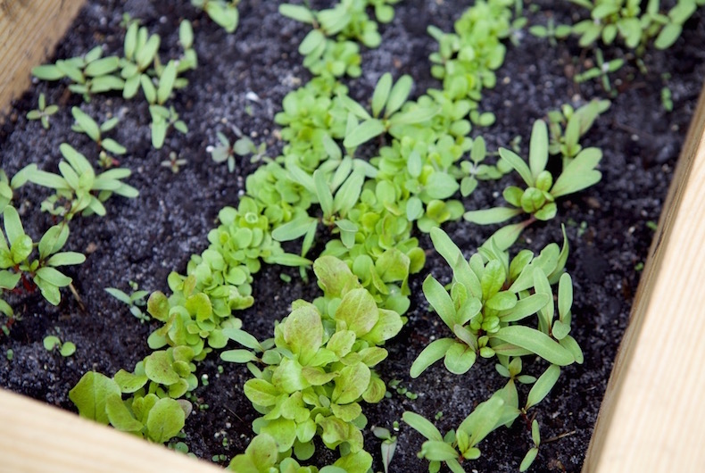

Привіт. Ми – освітня платформа Kyiv Farm, що вчить киян використовувати вільні майданчики в місті та вирощувати рослинну їжу.
Міське фермерство
За даними ООН, 800 млн. людей у світі вирощує овочі, фрукти і тварин у містах і приміських територіях, виробляючи 15% світового продовольства.
Знання про їжу
Міські городи – це освітні центри, містки між людьми і природою. Вони розповсюджують знання про те звідки береться їжа, яку цінність створює.
Спільнота
Міське фермерство не замінить сільське господарство. Воно існує в місті, щоб розвиватися. Міські городи – гарний приклад того, якою має бути спільнота. І тому вони безцінні.

Чотири кроки як створити город у місті?
1
Простір
Подумайте про створення городу у спільному подвір'ї багатоповерхівки або у сквері. А як щодо контейнерів на балконах і навіть дахів будинків?
2
Матриця рослин
Створіть матрицю рослин, яка підходять вашій місцевості. Зосередьтеся на овочах та зелені, які їсте регулярно. Почніть з рослин, які легко вирощувати.
3
Витратні матеріали
Подбайте про насіння та садженці від локальних фермерів. Не забудьте про ґрунт, торфосуміш та гумус для кращого врожаю.
4
Навчання
Поки ви чекаєте теплих весняних днів, не гайте часу. Читайте матеріали про екологічне фермерство, здорові ґрунти, локальне насіння, громадські городи.